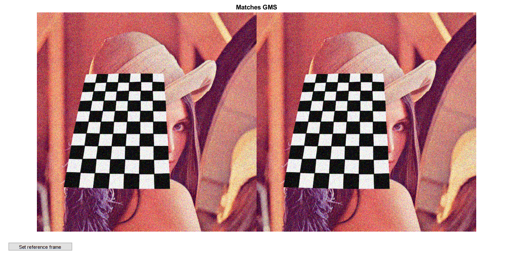
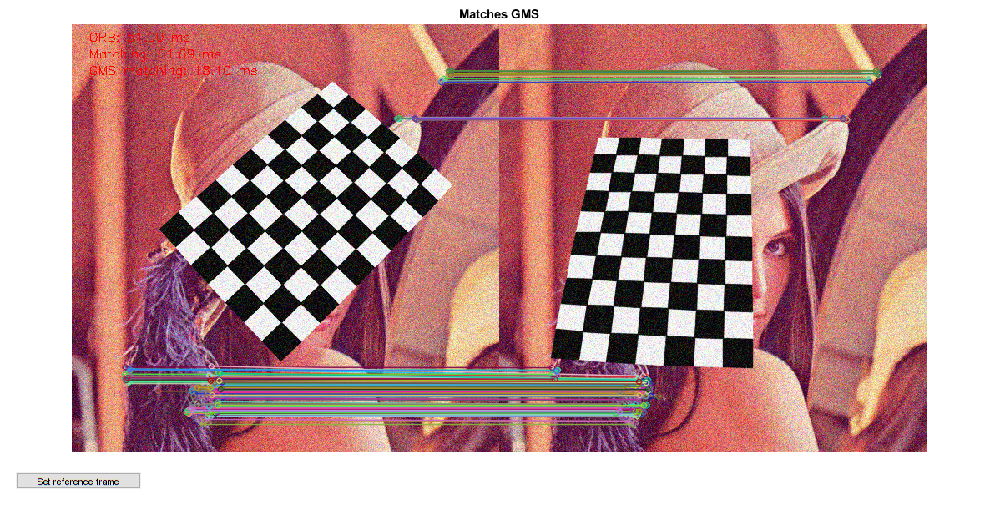

GMS matching strategy (video)
This sample demonstrates the GMS matching strategy.
Sources:
Options
opts = struct();
opts.nfeatures = 2500;
opts.fastThreshold = 20;
opts.drawSimple = true;
opts.withRotation = false;
opts.withScale = false;
% helper function
siz = @(img) [size(img,2), size(img,1)];create feature detector and descriptor matcher objects
detector = cv.ORB('MaxFeatures',opts.nfeatures, 'FastThreshold',opts.fastThreshold); matcher = cv.DescriptorMatcher('BruteForce-Hamming');
initialize camera
cap = createVideoCapture(0); assert(cap.isOpened()); frame = cap.read(); assert(~isempty(frame));
prepare UI
hImg = imshow(cat(2,frame,frame)); title('Matches GMS') hFig = ancestor(hImg, 'figure'); setappdata(hFig, 'flag',false); hBtn = uicontrol('Parent',hFig, 'Style','pushbutton', ... 'Position',[20 20 150 20], 'String','Set reference frame', ... 'Callback',@(~,~) setappdata(hFig, 'flag',true));
Main loop
disp('Press button to reinitialize the reference image.') disp('Close figure to quit.') tsec = zeros(3,1); [frameRef, kpRef, descRef] = deal([]); while ishghandle(hFig) % read frame frame = cap.read(); if isempty(frame), break; end % reference frame if isempty(frameRef) frameRef = frame; [kpRef, descRef] = detector.detectAndCompute(frameRef); end % detect keypoints and compute descriptors tic(); [kp, desc] = detector.detectAndCompute(frame); tsec(1) = toc(); % match descriptors tic(); matchesAll = matcher.match(desc, descRef); tsec(2) = toc(); % GMS matching tic(); matchesGMS = cv.matchGMS(siz(frame), kp, siz(frameRef), kpRef, matchesAll, ... 'WithRotation',opts.withRotation, 'WithScale',opts.withScale); tsec(3) = toc(); % show GMS matches out = cv.drawMatches(frame, kp, frameRef, kpRef, matchesGMS, ... 'NotDrawSinglePoints',opts.drawSimple); % display results str = { sprintf('ORB: %.2f ms', tsec(1)*1000) sprintf('Matching: %.2f ms', tsec(2)*1000) sprintf('GMS matching: %.2f ms', tsec(3)*1000) }; for i=1:numel(str) out = cv.putText(out, str{i}, [20 20*i], 'FontScale',0.5, 'Color',[255 0 0]); end set(hImg, 'CData',out) drawnow % check if button was pressed flag = ishghandle(hFig) && getappdata(hFig, 'flag'); if flag setappdata(hFig, 'flag',false); frameRef = []; % reset reference frame for next iteration end end cap.release();
Press button to reinitialize the reference image. Close figure to quit.